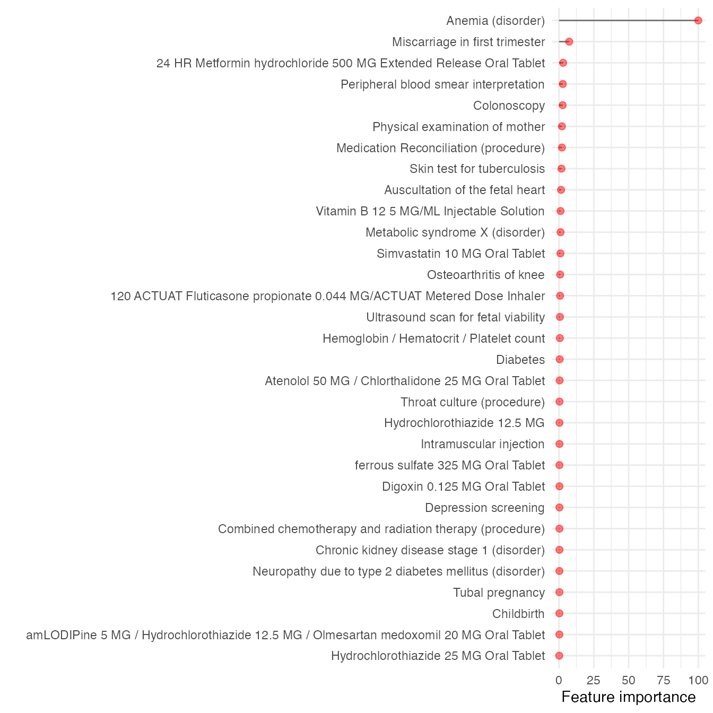

Install and load the required packages:
if(!require(pacman)) install.packages("pacman")
#> Loading required package: pacman
pacman::p_load(data.table, devtools, backports, Hmisc, tidyr,dplyr,ggplot2,plyr,scales,readr,
httr, DT, lubridate, tidyverse,reshape2,foreach,doParallel,caret,gbm,lubridate,praznik)Here we go through the vanilla implementation of MLHO using the synthetic data provided in the package.
The synthetic data syntheticmass downloaded and prepared according to MLHO input data model from SyntheticMass, generated by SyntheaTM, an open-source patient population simulation made available by The MITRE Corporation.
data("syntheticmass")here’s how dbmart table looks (there’s an extra column that is the translation of the phenx concepts):
head(dbmart)
#> patient_num phenx
#> 1 8d4c4326-e9de-4f45-9a4c-f8c36bff89ae 169553002
#> 2 10339b10-3cd1-4ac3-ac13-ec26728cb592 430193006
#> 3 f5dcd418-09fe-4a2f-baa0-3da800bd8c3a 430193006
#> 4 f5dcd418-09fe-4a2f-baa0-3da800bd8c3a 117015009
#> 5 f5dcd418-09fe-4a2f-baa0-3da800bd8c3a 117015009
#> 6 f5dcd418-09fe-4a2f-baa0-3da800bd8c3a 430193006
#> DESCRIPTION start_date
#> 1 Insertion of subcutaneous contraceptive 2011-04-30 00:26:23
#> 2 Medication Reconciliation (procedure) 2010-07-27 12:58:08
#> 3 Medication Reconciliation (procedure) 2010-11-20 03:04:34
#> 4 Throat culture (procedure) 2011-02-07 03:04:34
#> 5 Throat culture (procedure) 2011-04-19 03:04:34
#> 6 Medication Reconciliation (procedure) 2011-11-26 03:04:34our demographic table contains: patient_num, white, black, hispanic, sex_cd.
##split data into train-test
uniqpats <- c(as.character(unique(dbmart$patient_num)))
#using a 70-30 ratio
test_ind <- sample(uniqpats,
round(.3*length(uniqpats)))
test_labels <- subset(labeldt,labeldt$patient_num %in% c(test_ind))
print("test set lables:")
#> [1] "test set lables:"
table(test_labels$label)
#>
#> 0 1
#> 261 90
train_labels <- subset(labeldt,!(labeldt$patient_num %in% c(test_ind)))
print("train set lables:")
#> [1] "train set lables:"
table(train_labels$label)
#>
#> 0 1
#> 593 227
# train and test sets
dat.train <- subset(dbmart,!(dbmart$patient_num %in% c(test_ind)))
dat.test <- subset(dbmart,dbmart$patient_num %in% c(test_ind))now dimensionality reduction on training set ## MSMR lite from here, we will split the data into a train and a test set and apply MSMR.lite to the training data
data.table::setDT(dat.train)
dat.train[,row := .I]
dat.train$value.var <- 1
uniqpats.train <- c(as.character(unique(dat.train$patient_num)))
##here is the application of MSMR.lite
dat.train <- MSMSR.lite(MLHO.dat=dat.train,
patients = uniqpats.train,
sparsity=0.005,
labels = labeldt,
topn=200)
#> [1] "step - 1: sparsity screening!"
#> [1] "step 2: JMI dimensionality reduction!"Notice that we are removing concepts that had prevalence less than 0.5% and then only taking the top 200 after the JMI rankings. See help (?mlho::MSMSR.lite) for MSMR.lite parameters.
Now we have the training data with the top 200 features, to which we can add demographic features. Now on to prepping the test set:
dat.test <- subset(dat.test,dat.test$phenx %in% colnames(dat.train))
setDT(dat.test)
dat.test[,row := .I]
dat.test$value.var <- 1
uniqpats.test <- c(as.character(unique(dat.test$patient_num)))
dat.test <- MSMSR.lite(MLHO.dat=dat.test,patients = uniqpats.test,sparsity=NA,jmi = FALSE,labels = labeldt)Here notice that we only used MSMR.lite to generate the wide table that matches to the dat.train table.
##Modeling we will use the mlearn function to do the modeling, which includes training the model and testing it on the test set.
model.test <- mlearn(dat.train,
dat.test,
dems=dems,
save.model=FALSE,
classifier="gbm",
note="mlho_terst_run",
cv="cv",
nfold=5,
aoi="prediabetes",
multicore=TRUE)
#> [1] "the modeling!"
#> Iter TrainDeviance ValidDeviance StepSize Improve
#> 1 1.0611 nan 0.1000 0.0571
#> 2 0.9674 nan 0.1000 0.0440
#> 3 0.8988 nan 0.1000 0.0341
#> 4 0.8394 nan 0.1000 0.0298
#> 5 0.7898 nan 0.1000 0.0245
#> 6 0.7477 nan 0.1000 0.0194
#> 7 0.7105 nan 0.1000 0.0164
#> 8 0.6808 nan 0.1000 0.0140
#> 9 0.6560 nan 0.1000 0.0121
#> 10 0.6345 nan 0.1000 0.0095
#> 20 0.5234 nan 0.1000 0.0025
#> 40 0.4479 nan 0.1000 -0.0004
#> 50 0.4252 nan 0.1000 -0.0010
#> Loading required package: pROC
#> Type 'citation("pROC")' for a citation.
#>
#> Attaching package: 'pROC'
#> The following objects are masked from 'package:stats':
#>
#> cov, smooth, var
#> Loading required package: PRROC
#> Loading required package: ModelMetrics
#>
#> Attaching package: 'ModelMetrics'
#> The following object is masked from 'package:pROC':
#>
#> auc
#> The following objects are masked from 'package:caret':
#>
#> confusionMatrix, precision, recall, sensitivity, specificity
#> The following object is masked from 'package:base':
#>
#> kappa
#> Setting levels: control = N, case = Y
#> Setting direction: controls < casestry ?mlho::mlearn to learn more about mlearn parameters.
you can select a variety of models. For binray classification tasks, chose from:ORFlog, RRF,gbm,bayesglm,regLogistic,xgbDART,regLogistic, glmnet, bayesglm, nb, svmRadialWeights,avNNet,and ordinalRF. see the list and description of all available models
mlearn outputs
outputs of mlearn include:
model.test$ROC
model.test$features
model.test$AE
model.test$missing.features
For instance, only the following 32 features were used in phenotyping the prediabetes:
model.test$features
#> Overall features classifier aoi
#> 5 0.3136170 197604 gbm prediabetes
#> 12 0.3235465 310325 gbm prediabetes
#> 14 0.1539752 310798 gbm prediabetes
#> 19 1.0037857 314231 gbm prediabetes
#> 20 0.3415622 429503 gbm prediabetes
#> 25 0.4411857 746030 gbm prediabetes
#> 34 2.9403691 860975 gbm prediabetes
#> 35 0.7740851 895994 gbm prediabetes
#> 41 0.2456665 999967 gbm prediabetes
#> 56 1.0986762 2001499 gbm prediabetes
#> 58 2.0757288 5880005 gbm prediabetes
#> 61 2.7231739 14768001 gbm prediabetes
#> 64 7.3031171 19169002 gbm prediabetes
#> 68 1.7556961 28163009 gbm prediabetes
#> 73 0.4680127 44054006 gbm prediabetes
#> 90 0.2529442 66348005 gbm prediabetes
#> 95 2.6082006 73761001 gbm prediabetes
#> 98 0.3294569 76601001 gbm prediabetes
#> 99 0.2574582 79586000 gbm prediabetes
#> 106 0.5951390 104091002 gbm prediabetes
#> 112 0.3500893 117015009 gbm prediabetes
#> 123 0.6573163 169230002 gbm prediabetes
#> 125 0.3098779 171207006 gbm prediabetes
#> 132 1.4529787 225158009 gbm prediabetes
#> 137 1.0982878 237602007 gbm prediabetes
#> 139 0.8168777 239873007 gbm prediabetes
#> 147 100.0000000 271737000 gbm prediabetes
#> 180 2.0730375 430193006 gbm prediabetes
#> 181 0.3051240 431855005 gbm prediabetes
#> 197 0.3094696 703423002 gbm prediabetes
#> 200 0.2727734 368581000119106 gbm prediabetes
#> 202 0.2682787 black gbm prediabeteswe recommend iterating the training and testing and storing the coefficients in a directory.
Here we create a plot of the feature importance scores for each of the top (here we have ) predictors identified by MLHO.
To do so, let’s map the concept codes to their “English” translation. That’s why we kept that 4th column called description in dbmart.
dbmart.concepts <- dbmart[!duplicated(paste0(dbmart$phenx)), c("phenx","DESCRIPTION")]
mlho.features <- data.frame(merge(model.test$features,dbmart.concepts,by.x="features",by.y = "phenx"))
datatable(dplyr::select(mlho.features,features,DESCRIPTION,`Feature importance`=Overall), options = list(pageLength = 5), filter = 'bottom')now visualizing feature importance
(plot<- ggplot(mlho.features) +
geom_segment(
aes(y = 0,
x = reorder(DESCRIPTION,Overall),
yend = Overall,
xend = DESCRIPTION),
size=0.5,alpha=0.5) +
geom_point(
aes(x=reorder(DESCRIPTION,Overall),y=Overall),
alpha=0.5,size=2,color="red") +
theme_minimal()+
coord_flip()+
labs(y="Feature importance",x=""))
As we recommended above, it’s best to at least iterate the training process 5 times, in which case you’ll have 5 files containing the important features from MLHO. We do this regularly. If you do so, you can compute the mean/median values for each feature.
Now if you want to get the regression coefficients and compute Odds Ratios (ORs), you can then select the top feature that were selected most frequently in MLHO iterations to run a regression model (pass glm to mlearn) and extract regression coefficients to then transform to ORs.